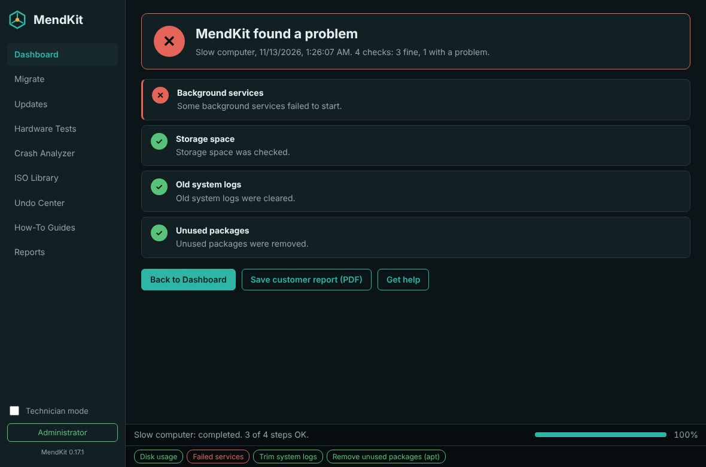
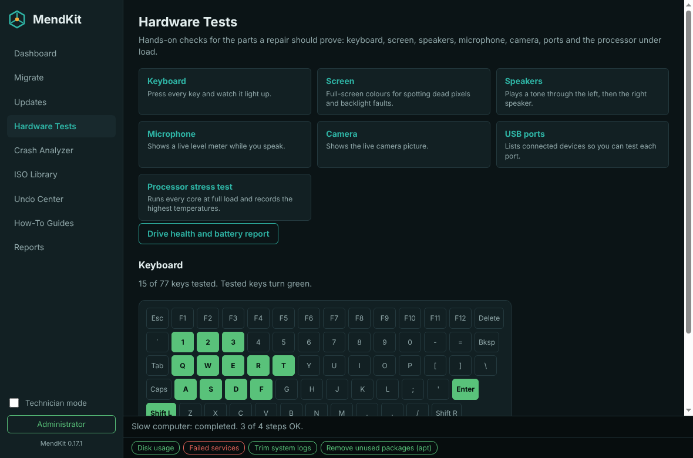

Fix your computer without knowing how computers work.
MendKit is a free app for Windows, Mac and Linux. Tell it what is wrong, it runs the right repairs, then it tells you what it found in plain words.
Free. No account, no ads, nothing to sign up for.
One app for the jobs a repair shop does
Everything below is built in. You do not need to find, download or learn separate tools.
Fix problems
- One-click tune-up
- Checks the drive, repairs system files, cleans up, scans for malware and installs updates, in the right order.
- Internet and Wi-Fi
- Works out whether you are on cable or Wi-Fi and finds where the connection stops.
- Crashes and blue screens
- Reads the crash history, names the likely cause and gives you a short repair plan.
- Scam cleanup
- Finds remote-control programs a scammer may have left behind and removes the ones you choose.
- Printer, sound, Bluetooth, camera
- A fix for each of the everyday things that stop working.
Move and protect your files
- Move to a new computer
- Sends your files, settings and app list from the old computer to the new one over your home network.
- Rescue files from a dead computer
- Connect the old drive and MendKit finds each person's files and copies them over.
- Backups
- Back up to an external drive now, or every week by itself.
- Erase for good
- Wipes files or a whole drive so they cannot be recovered, before you sell or recycle.
Check and set up
- Hardware tests
- Keyboard, screen, speakers, microphone, camera, USB ports and a heat test for the processor.
- Is it worth fixing?
- A straight answer on whether to keep, upgrade or replace the computer.
- Free tools, installed for you
- 61 trusted free programs, each with a guide on how to use it.
- Settings you can undo
- Turn off annoyances like ads and widgets. Every change can be put back exactly as it was.
- Updates
- System, apps and drivers in one place.
It shows its work, in plain words
Before anything runs you see the list of steps. Afterwards you get a result you can read, not a wall of code.



Simple for you, detailed for a technician
One switch changes how much MendKit shows.
Simple mode
For anyone. Big buttons, plain questions and results a customer can read.
- Pick a problem and press Start
- A one-page report with a health score
- "Get help" sends that report to someone you trust
Technician mode
For people who fix computers for a living, or want to see everything.
- Every command, with its full output and log
- Setup profiles for new computers, backup images and drive wiping
- A USB stick version that runs without installing
Careful with your computer
A repair tool has a lot of power. These are the rules MendKit keeps.
- You see the steps first.Nothing runs until you press Start.
- Changes can be undone.Settings are recorded before they change, and a restore point is made before repairs on Windows.
- Your files are never overwritten.When moving or restoring, a file with the same name is kept alongside, not replaced.
- Passwords stay private.MendKit never reads or copies saved passwords or browser cookies.
- Erasing needs you to type ERASE.And the drive your computer runs from is never offered for wiping.
- No account and no tracking.It runs on your computer and sends nothing about you anywhere. By itself it only checks for a newer version and whether the internet is working.
Download MendKit
Free for everyone. Pick the kind of computer you have.
Windows
Windows 10 or 11, 64-bit.
Download for WindowsInstallerOr the portable version: one file that runs without installing.
How to install
- Open the file you downloaded.
- Windows may say it "protected your PC" because MendKit is new. Click More info, then Run anyway.
- Follow the installer, then open MendKit from the Start menu.
- For repairs, click Restart as administrator on the first screen.
Mac
Macs with Apple chips (M1 or newer).
Download for MacDisk imageHow to install
- Open the downloaded file and drag MendKit into Applications.
- Open MendKit. macOS stops it the first time because MendKit is not yet registered with Apple; click Done.
- Open System Settings, Privacy & Security, scroll down and click Open Anyway next to MendKit, then confirm.
- If macOS says MendKit "is damaged", open Terminal and run
xattr -cr /Applications/MendKit.app, then open it again.
Linux
Any recent 64-bit distribution.
Download for LinuxUbuntu, Mint, Debian (.deb)Fedora or openSUSE: the .rpm package. Other distributions: the AppImage or the tar.gz archive.
How to install
- .deb (Ubuntu, Linux Mint, Debian, Pop!_OS, Zorin): double-click the file and click Install, or run
sudo apt install ./MendKit-*.deb. MendKit is then in the applications menu. - .rpm (Fedora, openSUSE): double-click it, or run
sudo dnf install ./MendKit-*.rpm. - AppImage: right-click it, Properties, allow running as a program, then double-click it. On Ubuntu 22.04 and later, AppImages need one extra package first:
sudo apt install libfuse2t64(libfuse2on 22.04).
The newest version. The Windows version has had the most testing; the Mac and Linux versions are newer. Installed copies update themselves.